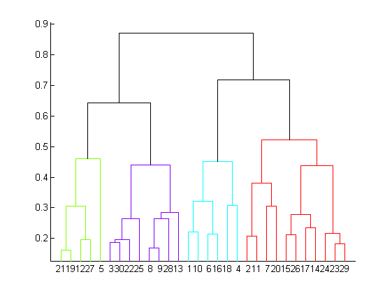
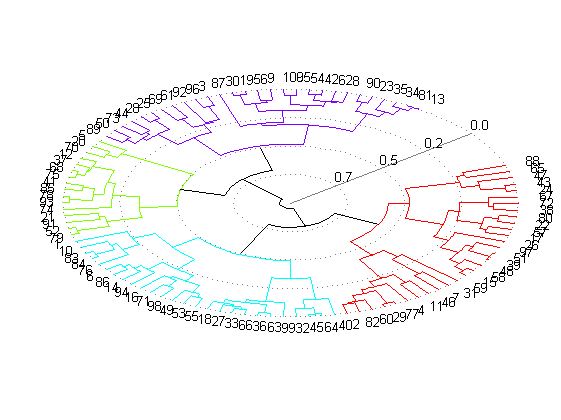
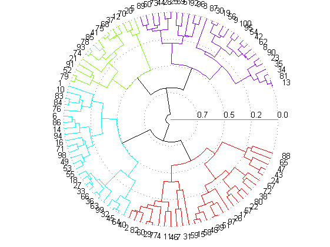

Drawing a Polar Dendrogram
Sam Roberts
We're all familiar with hierarchical cluster analysis, and the dendrograms it produces as output.
X= rand(100,2); Y= pdist(X,'cityblock'); Z= linkage(Y,'average'); dendrogram(Z,'colorthreshold','default');
By default, if there are more than 30 points in the dataset, dendrogram collapses the points into groups, to improve the look of the visualisation. Sometimes you don't want this - but showing all 100 points in the dataset results in a rather cluttered plot.
dendrogram(Z,0,'colorthreshold','default');

This can be improved upon by using a polar dendrogram, which spreads out the leaf nodes around the circumference of a circle.
polardendrogram(Z,0,'colorthreshold','default');
Sometimes the angled view is nice, sometimes you might prefer a top-down view.
clf polardendrogram(Z,0,'colorthreshold','default'); zoom(0.8); view(2);